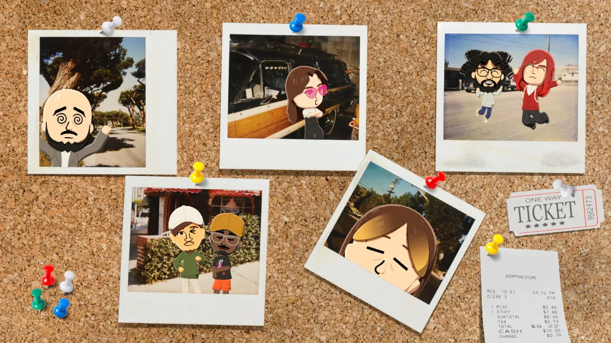
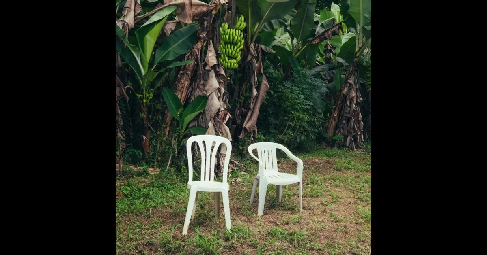

A LITTLE GRATITUDE
Thank
you!
To the special people I’ve met throughout my life: thank you for being part of the story.
Back to my little corner ↗

A LITTLE GRATITUDE
To the special people I’ve met throughout my life: thank you for being part of the story.
Back to my little corner ↗
